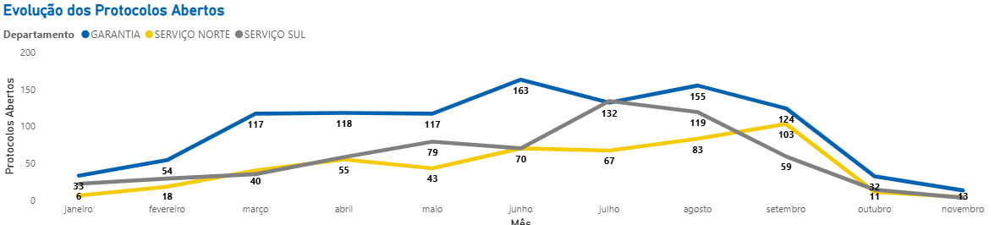

Protocolos Abertos
Fechamos a primeira quinzena de novembro com protocolos abertos originados em outubro: 20 protocolos em aberto, atualmente em tratamento.
Estamos em declínio no número de protocolos abertos, conforme indicado no gráfico abaixo.
Histórico de Protocolos Abertos
Gráfico: histórico de protocolos abertos — tendência de redução.
Análise de Protocolos Fechados – Novembro 2025
Total de protocolos fechados no mês: 313
Desses, 276 foram concluídos dentro do prazo, e 43 fora do prazo.
Índice de protocolos fechados no prazo: 86,94% — acima da meta de 80%.
Apesar de termos fechado protocolos atrasados, o desempenho geral superou a meta. A expectativa para dezembro é ainda melhor.
Fechados no Mês

Gráfico: protocolos fechados — comparativo dentro/fora do prazo em novembro 2025.
Evolução Anual de Protocolos Fechados

Gráfico: evolução dos protocolos fechados ao longo do ano.